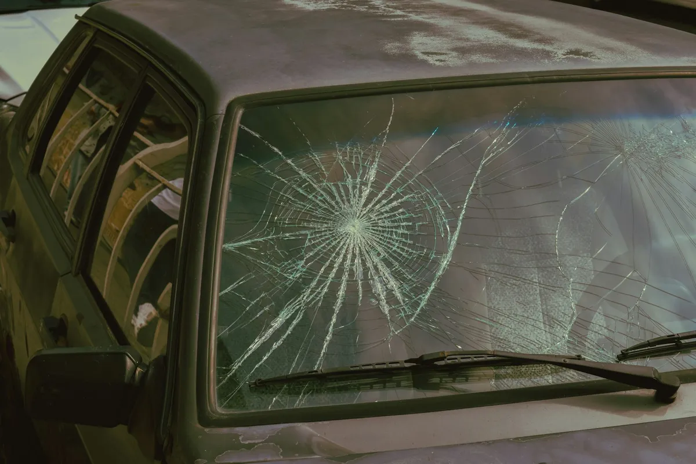

A cracked windshield replaced in your driveway with new glass, new adhesive, and every sensor moved over.
Call Now for a Free Quote: (321) 449-7258
Windshield replacement in Cape Canaveral is the fix when a crack is too long, too low, or too close to the edge to repair. Our mobile technician removes the damaged glass and sets a new windshield in fresh urethane at your home or workplace. You end up with clear glass that supports the roof and your airbags the way the carmaker intended.
We cover the hood and dash, remove the wipers and cowl, and cut the old windshield free. The frame is trimmed to a thin, clean layer of the old adhesive, and any scratches in the paint are primed so they will not rust in the salt air.
New urethane goes down in an even bead, and the glass is set with suction cups so it sits centered. The mirror, rain sensor, and camera bracket are moved over, the cowl goes back on, and we tell you the safe drive-away time.
Edge cracks are the most common reason a windshield cannot be saved. The edge of the glass carries the most stress, so damage there spreads quickly across the whole sheet.
Heat cycles, a poorly bonded older install, or a body flexing over rough roads can all push a crack across the glass. Hurricane debris can also leave impacts too large for resin.
The windshield for your exact trim matters most. Rain sensors, heated wiper areas, acoustic layers, heads-up displays and lane cameras each change the part, and some require calibration after install.
With comprehensive coverage, Florida Statute 627.7288 waives the deductible for windshield damage. Call for a free quote and we will give you the number for your vehicle before any work starts.
Call for a Free Quote: (321) 449-7258| OEM Glass | OEM-Equivalent Glass | |
|---|---|---|
| Who makes it | The supplier that built the original glass, with the carmaker logo | A major glass maker built to the same size and specs |
| Fit and optics | Matches the original exactly | Built to the same dimensions and safety standard |
| Best for | Heads-up displays and some camera systems | Most cars without special optical needs |
| Insurance | Some policies require a request | Commonly approved on claims |
Not sure which applies to your car? Call and describe it, and we will tell you. We also handle windshield chip & crack repair and mobile auto glass service.
Usually under an hour. The exact time depends on the urethane, the temperature, and the humidity, and we tell you the safe drive-away time before we leave.
Wait at least 24 hours. High-pressure water and spinning brushes can disturb the molding while the adhesive keeps curing.
Leaving a window open about an inch for the first day helps equalize air pressure when doors close, which protects the fresh seal.
Yes. We move the mirror and sensor to the new glass with a new gel pad where needed, then test them before we leave.
Call now for a free quote and a time at your home or work. We confirm the glass for your vehicle before we arrive.
Call Now for a Free Quote: (321) 449-7258